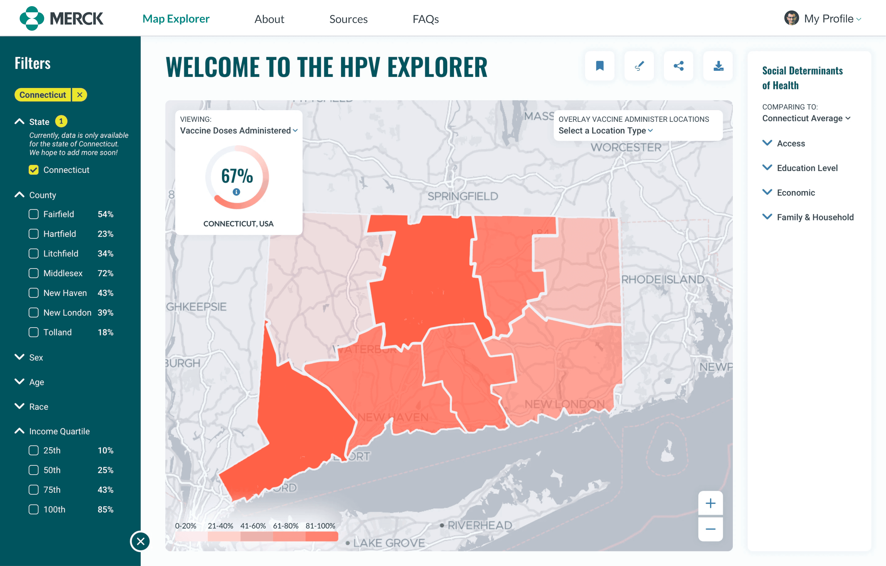
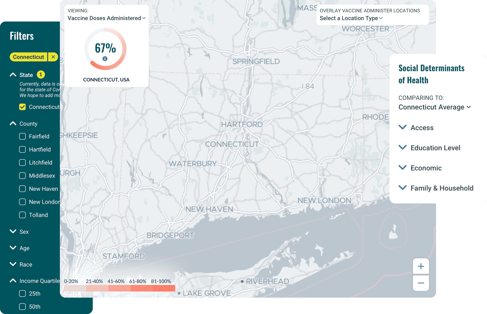
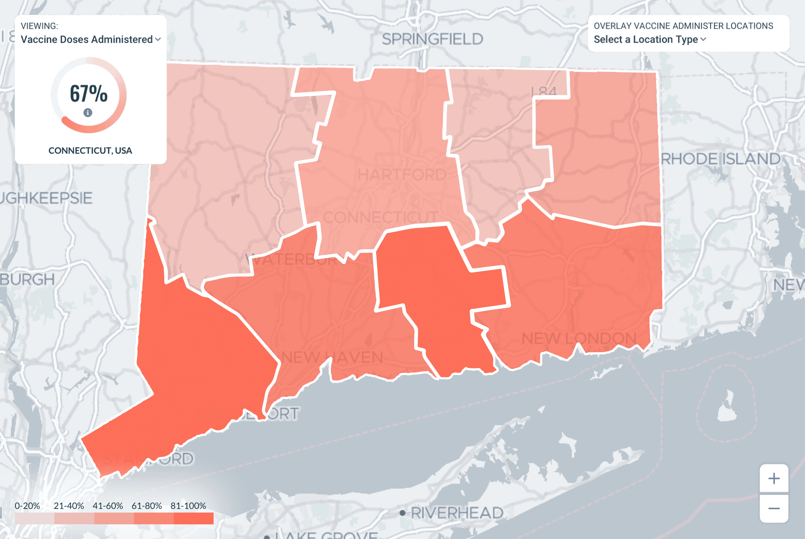
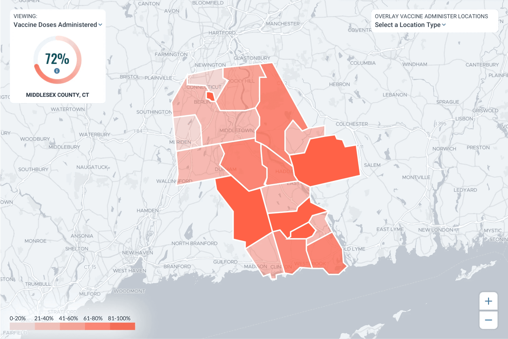
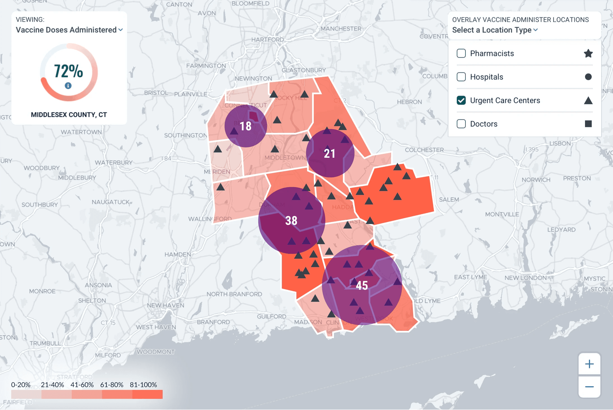
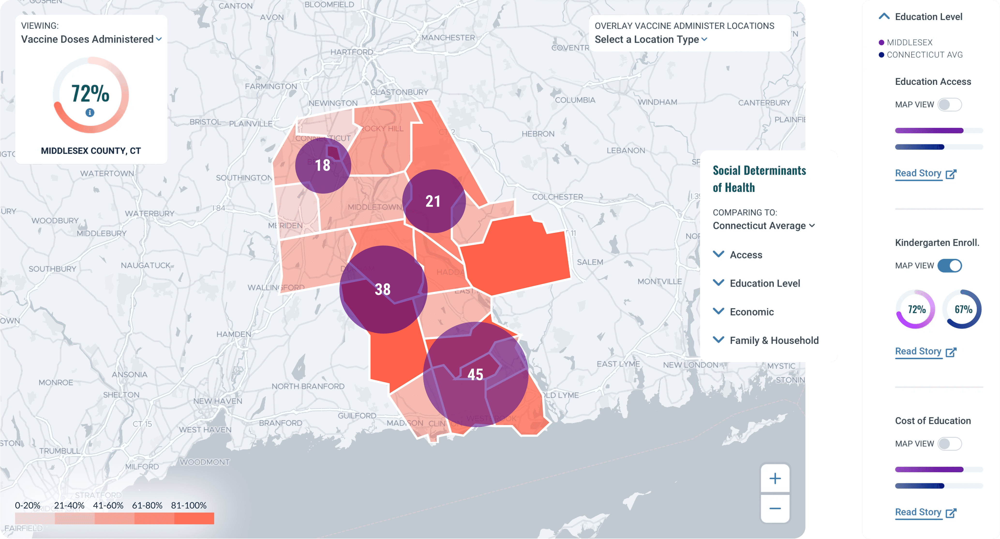

The Problem
Merck needed to understand why HPV vaccination coverage was low in specific communities — not just where, but which combination of factors (awareness, misinformation, mobility, access to vaccination sites) was actually driving the gap in each place. Healthcare researchers needed a tool that could hold both medical data and social/community data at once, and let them cross-reference the two, since neither alone explained the coverage patterns Merck was seeing.
My Role
I worked as Product Designer on a 3-person team (Design Lead, Brand Design) to design a geospatial research and analytics tool — the HPV Vaccination Explorer — built for healthcare researchers first, with downstream use by Merck's marketing team to target awareness efforts in low-coverage areas.
Approach
The core design decision came out of user interviews: researchers' mental model split the data into two distinct categories — quantitative medical data (sex, age, infection rates) and qualitative social data, often called social determinants of health (income, education level, vaccine site accessibility). I designed the interface around that exact split rather than a generic filter panel: medical data became filters on the left with dynamic map overlays, while social determinants stayed permanently visible on the right, so researchers could cross-reference the two without losing either from view.

Because researchers needed to move between state, county, and area-code granularity, I introduced a choropleth visualization — which let them visually spot under-served areas at a glance, functioning as a heatmap, while still supporting drill-down into the specific data behind any given area. On top of that base layer, users could add further overlays (like vaccine administration locations) to test correlations between social and physical factors directly on the map, with a toggle to bring the social determinants panel data directly onto the map canvas for a combined view.
Choropleth, drilling down
State to county to the areas inside one county, with the headline rate updating at each level.
3.1State. Connecticut by county — 67%.

3.2Select. Pointing at a county outlines it.
3.3County. Middlesex County, CT — 72%, shown by smaller areas.

Overlays
Physical locations, then social data, layered onto the same county view.


Outcome
COVID-19 forced Merck to shelve this project before it went into development — but the research and design work was strong enough that the client came back anyway. Merck's Director of Outcomes Research called the deliverables "outstanding," and the trust built through that one-month engagement led directly to Merck returning for additional projects, generating $500K+ in new contracts.
“[Final] deliverables are OUTSTANDING! I have enjoyed working on this project with this team and have learned so much. I remain optimistic that future projects are in store.”